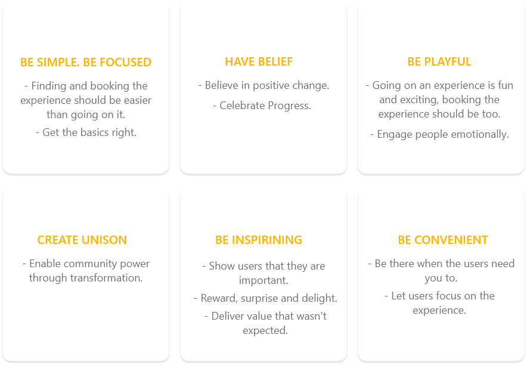

Project information
- Category: Web design
- Client: Private Kruger Safaris
- Project date: 01 November, 2020
- Project URL: www.privatekrugersafaris.co.za/
Opportunity
At Go4IT Africa we were tasked with designing and building a user-friendly website for Private Kruger Safaris, they were newbies to the digital world and urgently needed to drive traffic to their website so that when the travel ban has been lifted they will be flooded with bookings sales to regain the revenue they lost during the pandemic. Private Kruger Safaris started building a website through another company specializing in inventory but based on content and UX/UI audits of the website, we hypothesized that users were not aware of what the company offers exactly, the website was still at a very early age of development and needed some attention, so they contacted us. Private Kruger Safaris also has a sister company called B1 Photo Safaris where they take clients on photographic safaris in the Kruger National Park. The company has the most extraordinary photographs they took throughout their journeys in the Kruger National Park, these images enabled us to build a big part of the company character into the website. The biggest challenge we were going to face was having to merge two companies into one platform.
Approach
Our client approached us with two primary objectives – to enhance sales and usability online; and to promote a more professional experience to their company beyond their competitors. Although our brief was to promote better functionality than our client’s competitors, this was quite challenging because we’ve been creating eCommerce platforms specializing in selling tours and experiences online almost everyday, so achieving the goal of letting them stand out took some brainstorming. To differentiate them in an already mature and competitive market, we needed to define a desirable role for the website and how it would meet the needs of the users. We were thrilled by the opportunity to create something more meaningful in a sense of this being two companies merged into one platform. I opted for a lean approach on the UI side which emphasised sketching, exploring, client feedback, user feedback (from my every helpful team at Go4IT) and mock-ups, this sparked tons of great ideas. gathering as much research as possible about my client helped me develop a clear vision of the tonal expectations of the users. To communicate the personality of the website to our client, we developed a set of experience principles. These were used to perceive design decisions, clearly express core values and describe key attributes the site should uphold for both users and the company. These principles were used to constantly drive the direction of the site.
I took a top-down approach (breaking up the big problem into smaller understandable chunks) to defining the overall structure of the experience. By wireframing and storyboarding, I generated stacks of ideas about the arrangement of UI, functional and data elements, and interactive behaviours. Starting broad, my vision began evolving into something concrete. The design language, interactions and the anatomy of the site began to piece together.
I storyboarded my ideas to help design and communicate more complex interactions and flows. This was a huge time-saver.

Solution
The design of the Dream Wild Adventure website has had a positive impact on the book and pay online experience. The CMS and inventory have been handed over to the client to be managed and changed in the future according to their liking. The Dream Wild team continued to evolve and polish the visual, as well as the finer functional details to the products. Although I may not be as involved in the growth of the site moving forward, it is great to see the foundation of my work brought to life.